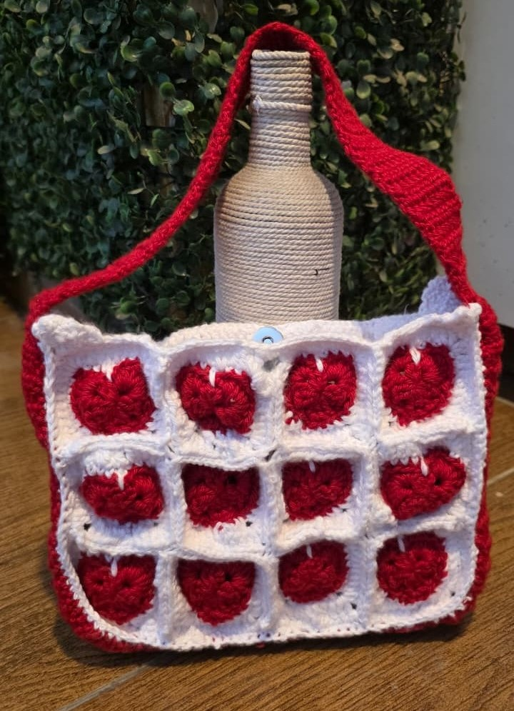

Bags
Heart Shoulder Bag
Red & white
Shoulder bag
4.5mm hook
One of the most iconic crochet bag designs, reimagined in classic red and white. The bag is made using individual heart granny squares joined together to create a roomy shoulder bag that's both playful and eye-catching.
Pro tip
Keep your hook size consistent throughout the entire project—both while making the granny squares and while joining them together. One consistent hook size makes a huge difference in the final look of your bag.
Tutorials
Follow this tutorial
Video walkthrough I used while making this heart bag.
▶Heart bag tutorial
Watch tutorial
Supplies I used
Tools & Materials
List the exact yarn, hooks, and accessories used for this bag.